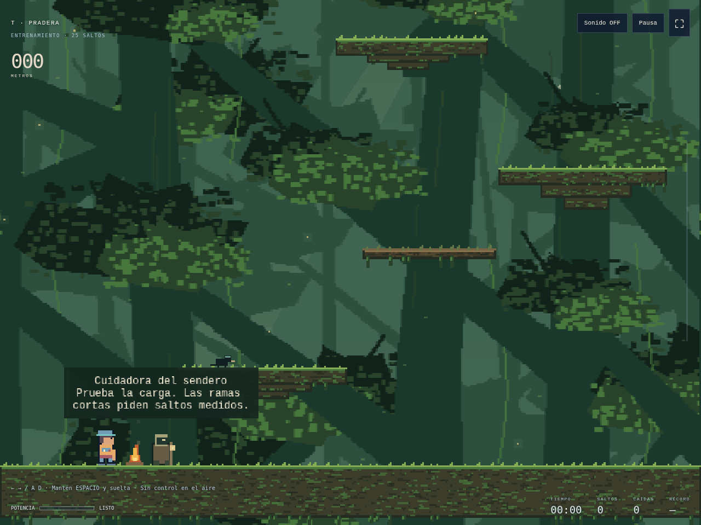
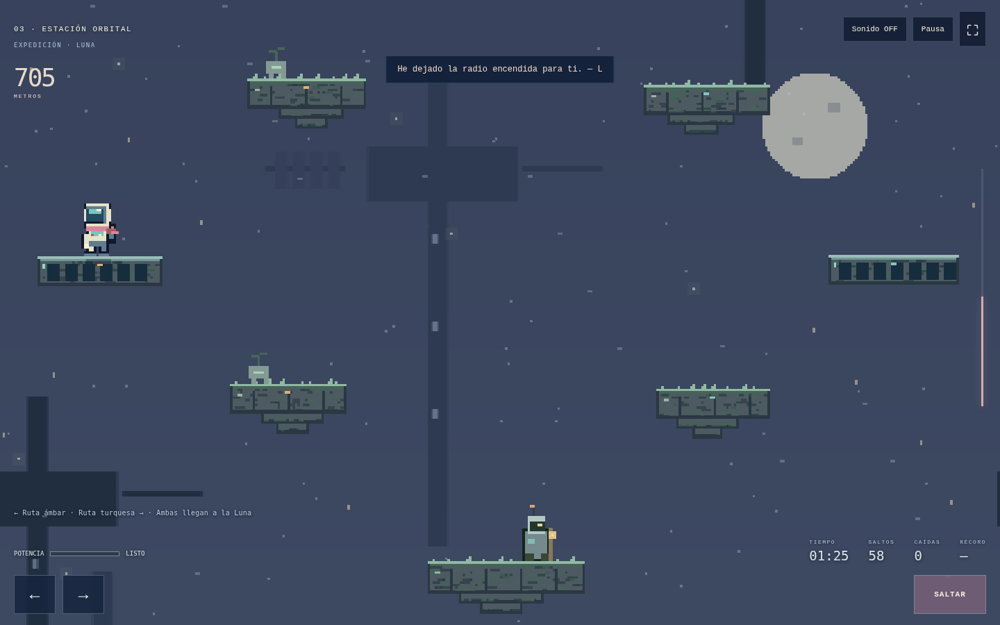

El primer paso
Entrena con el cadete entre ramas, salientes y ruinas. Aprende antes de ponerte el traje espacial.
TRANSMISIÓN ABIERTA · AVENTURA HTML5
La gravedad no entiende
de promesas.
Un cadete sin cohete debe convertir cada salto en una pequeña hipótesis para cruzar bosques y estaciones orbitales y reunirse con quien dejó una luz encendida en la Luna.
JUGARGratis en tu navegador · Teclado y táctil · Sin registro

01 / EL ALMA DEL JUEGO
«Guardé un sitio para ti en la Luna.»— L, al otro lado de la radio
Solo tienes tus botas, la carga de un salto y un mundo que sigue ahí cuando caes. De las raíces al vacío, cada apoyo te acerca a una persona; cada intento te enseña a mirar mejor el siguiente.
La subida no exige derrotar a nadie. Exige observar, decidir y volver a intentarlo.
Entrena con el cadete entre ramas, salientes y ruinas. Aprende antes de ponerte el traje espacial.
Ámbar o turquesa. Dos recorridos de 120 ascensos se encuentran en descansos habitados.
Del musgo a la Luna: aves, viajeros, fogatas y robots acompañan una subida en pixel art.
02 / RESONANCIA LUDONARRATIVA
Para cumplir la promesa, necesitas aprender a leer el mundo. El conocimiento es lo que te permite seguir subiendo.
Abrir la bitácora educativa ↗Estima su altura y distancia. Practicas orientación espacial antes de actuar.
Relaciona tiempo de carga, impulso y trayectoria. La dirección queda decidida al despegar.
Una caída da información: cambia una variable y prueba de nuevo. El aprendizaje nace de tus decisiones.
Una propuesta para practicar estimación y pensamiento experimental. La física está adaptada al juego; no es una simulación de un viaje espacial real.
03 / BITÁCORA DE VUELO
Carga con calma. Los descansos son encuentros, no checkpoints: el camino también se recorre de regreso.

04 / ANTES DE DESPEGAR
← → o A / D: camina y elige dirección.
ESPACIOMantén para cargar. Suelta para saltar.
ESCPausa. El viaje puede esperar.
En móvil, usa las flechas y mantén/suelta SALTAR. Sin control en el aire. Sin vidas ni daño. Las caídas pueden llevarte a zonas anteriores.
05 / NUESTRO HOGAR INDIE
Elegimos una casa para juegos de navegador, diarios de desarrollo y conversaciones alrededor de cada nueva versión.
Plataforma elegida. La cuenta del estudio y la ficha del juego están pendientes de creación.
Explorar itch.io ↗Leer nuestra elección y la ficha preparada ↗06 / EL MURO DE HONOR
Créditos claros. Sin etiquetas de licencia inventadas.
07 / LAS REGLAS DEL MUNDO REAL
Público general. Como referencias educativas, ESRB E / PEGI 7 por los escenarios oscuros y la tensión de las caídas. No es una clasificación oficial ni una certificación de ESRB o PEGI. Sin sangre, apuestas, compras o chat dentro del juego.
El progreso y los récords se guardan en este navegador mediante localStorage. El proyecto no incorpora analítica, publicidad ni registro de jugadores. GitHub Pages sirve los archivos; el juego intenta cargar Phaser desde jsDelivr y dispone de respaldo local. Esos proveedores pueden tratar datos técnicos de conexión según sus políticas.
Teclado, controles táctiles, sonido opcional y respeto por la preferencia de movimiento reducido. Puedes pausar o cerrar y continuar después. Si un salto frustra, una pausa también es parte del viaje.
Las funciones sociales de plataformas externas tienen sus propias normas y privacidad. Los materiales propios no se declaran CC0 por estar en un repositorio público; consulta los permisos de uso.
ELLA DEJÓ LA LUZ ENCENDIDA.